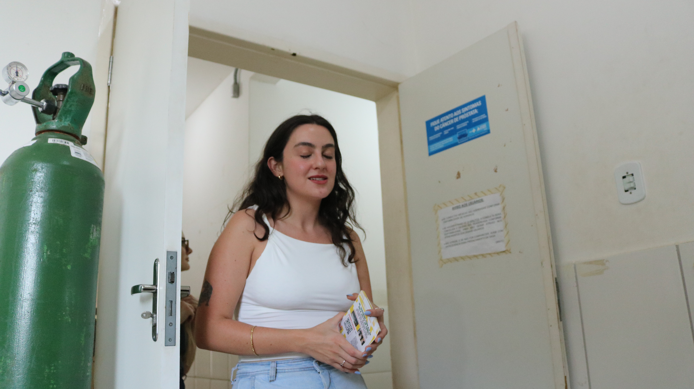

O INSS carimba o sofrimento de quem trabalha no Brasil inteiro. Quem carimba o sofrimento de quem trabalha aqui dentro?
A fila pra conseguir esse carimbo só cresce. E quem deveria dar esse carimbo também está adoecendo.
A fila tem número público, atualizado todo mês. Quem lê esse sofrimento inteiro, todo dia, não tem nenhum.